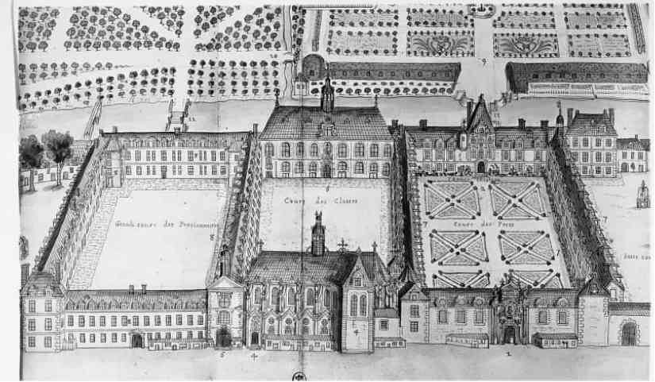

笛卡尔竟能积攒足够的自信和热情，持之以恒地推进自己迟迟才起步的研究工作，这样的结果似乎完全出于偶然。他1596年3月31日生于法国西北部的图赖讷，但他的家族却没有科学家的遗传因子。他的祖父和曾祖父都当过医生，父亲却是律师，并任治安推事。外祖父曾在普瓦提埃担任高级公职。母亲一方的亲属中似乎有人做过司法官员。父母双方的家族即使不是下层贵族，至少也离贵族身份不远，财产殷实，也受过良好的教育，但对科学没有特别的兴趣。在早年居家的这段时间里，没有任何迹象能让人预见到笛卡尔最终的职业选择。
大概是在十岁左右，小笛卡尔被送到了耶稣会士 [7] 在安茹创办的拉弗莱什公学 [8] 。他在这里学习了八年，接受了自然科学方面的早期训练。最后两年的课程中有数学和物理。他在数学方面表现出了天赋，然而他所学的物理却并不倚靠数学工具。笛卡尔接触的理论是以经院哲学的思路来解释自然界的差异与变化的，旨在以深奥、抽象和非量化的语汇来阐释定性描述的观察结果。
17世纪早期的耶稣会士在讲授经院物理学的同时，也意识到了天文学领域的最新进展，而后者的动力来自一种截然不同的、数学式的探究自然的方法。这一点在拉弗莱什公学也有所体现。例如，该校在1611年曾庆祝伽利略发现木星的卫星。耶稣会士们甚至可能开明地允许笛卡尔和他的同学们使用新发明的光学仪器，这些仪器早在1609年就开始在巴黎出售。但在课堂上，占绝对主导地位的仍是沉闷的经院教条，笛卡尔不禁兴味索然，至少他后来是这么描绘的。在仿自传体的《方法谈》（1637年作为他三篇科学著作的前言发表）中，他给读者的印象是，自己不仅未能从学生时代获益，反而深受折磨。只有拉弗莱什公学的数学启蒙对他后来的研究有所帮助，但据他说，就连这点知识都需清理一番之后才能发挥功用。这样看来，他著作中的那些核心问题最初激发他的兴趣，不是在1613年或1614年的拉弗莱什，而是在五年之后的荷兰。
笛卡尔于1614年离开拉弗莱什，1618年到达荷兰，其间他做了什么，我们知之甚少。有证据表明，1616年他在普瓦提埃获得了一个法学学位，这和几年前他哥哥皮埃尔的经历如出一辙。然而，皮埃尔后来遵父亲之命做了律师，家人为笛卡尔设计的却是军旅生涯。1618年笛卡尔到了荷兰的布雷达，以绅士志愿兵的身份加入了荷兰莫里斯亲王 [9] 的军队。这支军队堪称欧洲大陆贵族子弟的军事学校，而笛卡尔的实际地位则相当于一名士官。
二十二岁的时候，笛卡尔在布雷达遇见了一位比他年长约八岁的医生，此人名叫埃萨克·贝克曼 [10] 。两人一见如故。贝克曼知识渊博，对科学的诸多领域都感兴趣，他对年轻的笛卡尔产生了重要影响。1619年的一封信即是证明。“告诉你实话吧，”笛卡尔对贝克曼说，“是你帮我克服了无所事事的状态，让我想起了从前学过却几乎忘记的东西；每当我的心思偏离了严肃的主题，你总把我拉回正途。”所谓“严肃的主题”似乎是指理论数学和实用数学的一系列深奥问题。现存的两人在这一时期的通信很少涉及别的话题，他们的信件似乎只是面谈的延续。一封信讨论了独唱歌曲中音调之间的数学关系，在另一封信中笛卡尔宣称，他在六天之内解决了数学领域的四宗悬案。他还向贝克曼透露，自己打算公布一种崭新的科学，借助它可以全面解决任何算术或几何问题。由此可以推断，笛卡尔正是在此阶段孕育了对科学问题的热情。
与贝克曼的通信始于1619年4月底，当时笛卡尔离开了布雷达，前往哥本哈根。适逢三十年战争 [11] 爆发，他小心翼翼地避开军队的行进路线，绕道阿姆斯特丹和但泽，然后穿越波兰，最后到达奥地利和波希米亚 [12] 。信件表明，他启程时满脑子都是数学问题，在整个旅途中，这种兴趣不仅没有减弱，反而与日俱增。他似乎也改变了计划的行程。他没时间在波兰、匈牙利、奥地利和波希米亚漫游，于当年9月到达了法兰克福，正好赶上费迪南 [13] 皇帝的加冕礼。

图2 拉弗莱什公学（17世纪的版画，作者皮埃尔·艾弗林）
大概在乌尔姆附近，他停止了旅行，在德国 [14] 过冬。在这里，半年来专注的研究几乎变成了一种偏执。至少1619年11月10日是一个特殊的日子。他把自己关在一间暖房里，据说当日他看见了一个异象 [15] ，晚上还做了三个梦。他相信这是上帝在启示他，自己一生的使命就是将一种奇妙的科学（scientia mirabilis）呈现在世界面前。